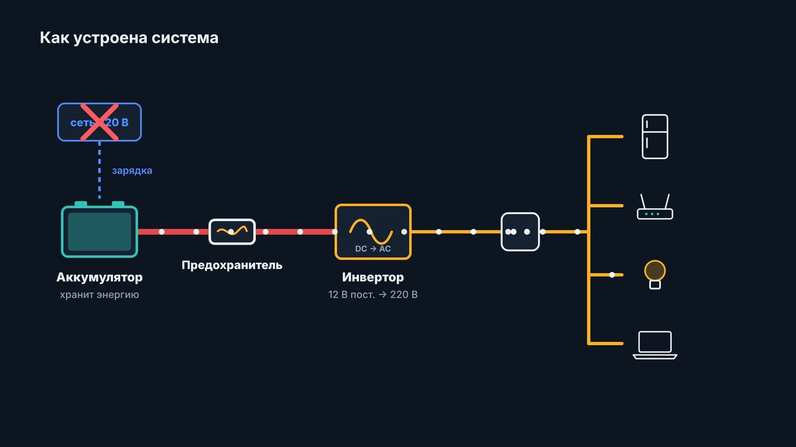
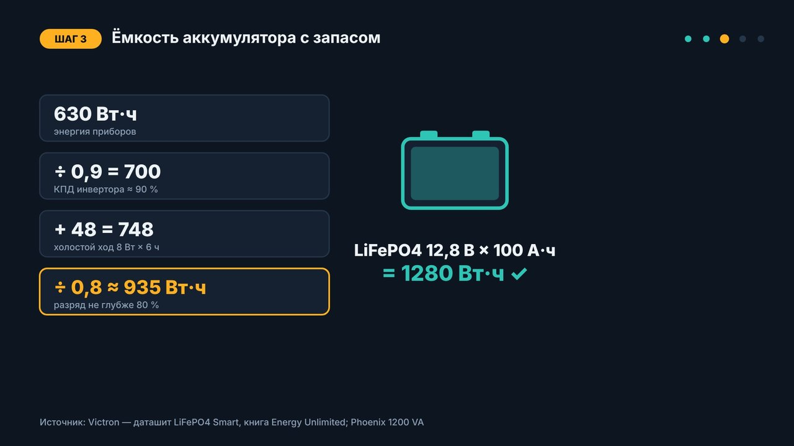
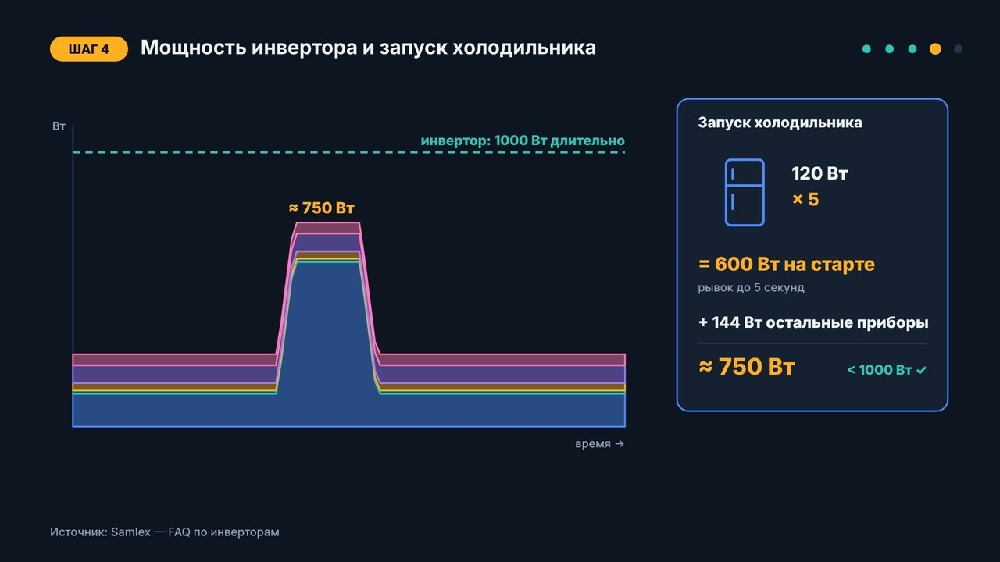
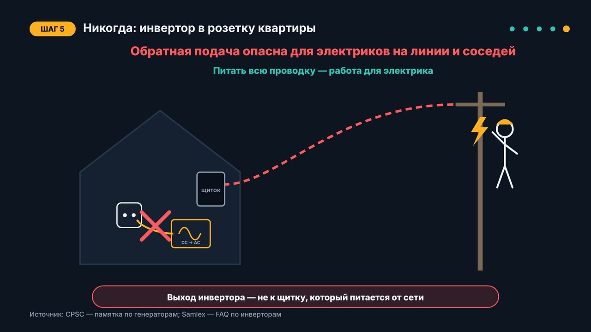

Резервне живлення квартири: розрахунок покроково
Світло вимкнули на шість годин. Щоб холодильник, інтернет, світло й ноутбук продовжували працювати, вистачає акумулятора з інвертором — якщо правильно їх підібрати. Нижче п'ять кроків розрахунку на зрозумілому прикладі.
Ролик російською, 5:50. Не відкривається? Дивитися на YouTube або читайте розрахунок нижче — у ньому все те саме.
Підставте свої прилади й час відключення — калькулятор порахує за тими самими формулами.
Відкрити калькуляторЯк влаштована система
Акумулятор зберігає енергію. Інвертор перетворює його постійний струм на звичайні 220 В, як у розетці. Між ними обов'язково стоїть запобіжник. Прилади підключаються до розеток інвертора або через подовжувач. Коли світло є, акумулятор заряджається — від окремого зарядного пристрою або від інвертора з вбудованим заряджанням.

1Список приладів
Вирішіть, що справді потрібно під час відключення — не вся квартира, а найважливіше. У прикладі: холодильник, роутер, три світлодіодні лампи, ноутбук і зарядка двох телефонів; відключення — 6 годин.
Потужність приладу написана на ньому самому: на наліпці, табличці або блоці живлення. Наприклад, у роутера на блоці живлення «12V 1A»: 12 В × 1 А = 12 Вт. Це максимум, тож розрахунок вийде із запасом.
Холодильник працює не постійно: компресор то вмикається, то вимикається. Тому беремо не потужність, а річне споживання з енергетичної наліпки:

2Енергія за час відключення
Потужність множимо на час роботи. Отримуємо ват-години — скільки енергії спожиє кожен прилад.
| Прилад | Потужність | Час | Енергія |
|---|---|---|---|
| Холодильник | 28,5 Вт у середньому | 6 год | 171 Вт·год |
| Роутер | 12 Вт | 6 год | 72 Вт·год |
| 3 світлодіодні лампи | 3 × 9 Вт | 6 год | 162 Вт·год |
| Ноутбук | 65 Вт (блок живлення) | 3 год | 195 Вт·год |
| 2 зарядки телефона | ≈ 15 Вт·год кожна | — | 30 Вт·год |
| Разом | ≈ 630 Вт·год |
15 Вт·год на заряджання — приклад: акумулятор телефона 4000 мА·год × 3,7 В ≈ 15 Вт·год. Ємність вашого телефона — в його характеристиках.
3Ємність акумулятора
Акумулятор беремо із запасом із трьох причин.
- Втрати в інверторі. У добрих моделей на 12 В ККД сягає 92 %. Це максимум, тому рахуємо 90 %: 630 ÷ 0,9 = 700 Вт·год.
- Холостий хід. Інвертор споживає енергію сам, навіть без навантаження: у моделі на 1200 ВА — близько 8 Вт. За 6 годин це ще 48 Вт·год, разом ≈ 748 Вт·год.
- Глибина розряду. Акумулятор не можна розряджати в нуль. LiFePO4 за даними виробника витримує близько 2500 циклів при розряді на 80 %: 748 ÷ 0,8 ≈ 935 Вт·год.

Літій чи свинець
| LiFePO4 | Свинцево-кислотний AGM | |
|---|---|---|
| Глибина розряду в розрахунку | 80 % | 50 % — виробник радить не залишати розрядженим більш ніж наполовину |
| Ресурс | ≈ 2500 циклів при розряді 80 % | ≈ 250 циклів при розряді 80 % |
| Потрібно для прикладу | ≈ 935 Вт·год | ≈ 1500 Вт·год |
| Вага | Літій, за даними виробника, до 70 % легший; свинець дешевший під час покупки | |

4Потужність інвертора
Спершу складаємо все, що може працювати одночасно: холодильник за табличкою 120 Вт, роутер 12, лампи 27, ноутбук 65, дві зарядки телефонів близько 40. Разом ≈ 264 Вт.

Але холодильник під час запуску бере набагато більше. Виробник інверторів Samlex пише, що холодильнику на старті потрібно приблизно в 5 разів більше робочої потужності, і ривок триває до 5 секунд. Тому інвертор підбираємо за тривалою потужністю, а не за коротким піком:
Для холодильника потрібен інвертор з чистою синусоїдою: на модифікованій синусоїді двигуни сильніше гріються.

5Збирання й безпека
Акумулятор, запобіжник та інвертор з'єднують товстими короткими дротами. На 12 В струм великий: при навантаженні 1000 Вт це близько 85 А (1000 ÷ (12,8 В × 0,92)). Переріз кабелю й номінал запобіжника беріть з інструкції до інвертора. Прилади вмикайте в розетки інвертора або через подовжувач.

Що купити для прикладу
- Акумулятор LiFePO4 12,8 В, 100 А·год (1280 Вт·год).
- Інвертор із чистою синусоїдою, тривала потужність не менше ≈ 750 Вт; дивіться ККД і холостий хід у паспорті.
- Запобіжник і кабелі — за інструкцією до інвертора.
- Зарядний пристрій, що підходить для вашого типу акумулятора, або інвертор із вбудованим заряджанням.
- Подовжувач для підключення приладів.
Потужності приладів у прикладі — приклади з наліпок. Для своєї квартири підставте свої цифри в калькулятор.
Джерела
- Victron Energy — даташит LiFePO4 Smart 12,8 В: комірка 3,2 В, 2500 циклів при розряді 80 %, до 70 % легший.
- Victron Energy — «Energy Unlimited»: свинцевий акумулятор не залишати розрядженим більш ніж на 50 %; AGM ≈ 250 циклів при розряді 80 %.
- Victron Energy — даташит Phoenix Inverter 180–1200 VA: ККД до 92 % (12 В), холостий хід 8 Вт, 1200 ВА = 1000 Вт тривало, 2400 Вт пік.
- Samlex — FAQ з інверторів: пускова потужність холодильника ≈ 5× робочої, до 5 секунд; не підключати вихід інвертора до щитка, що живиться від мережі.
- Samlex — чиста й модифікована синусоїда: на модифікованій двигуни сильніше гріються.
- CPSC — пам'ятка щодо портативних генераторів: зворотна подача небезпечна для електриків і сусідів.
Перевірено 14 листопада 2026 р. Знайшли помилку — напишіть у коментарях під роликом.